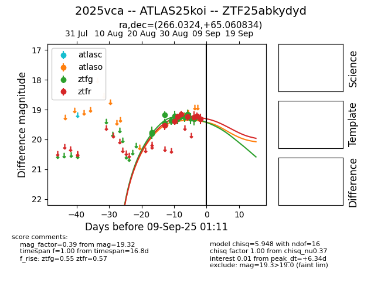

Target 2025vca at 2025-08-27 05:27, see:
FINK: fink-portal.org/ZTF25abkydyd
Lasair: lasair-ztf.lsst.ac.uk/objects/ZTF25abkydyd
ALeRCE: alerce.online/object/ZTF25abkydyd
TNS: wis-tns.org/object/2025vca
YSE: ziggy.ucolick.org/yse/transient_detail/2025vca
alt names
ZTF25abkydyd (ztf,fink)
2025vca (tns,yse)
coordinates:
equatorial (ra, dec) = (266.0324,+65.06083)
galactic (l, b) = (94.6884,+31.47326)
photometry
last ztfg=19.18
4 ztfg detections
